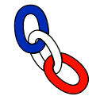

Keðjan v.1.0.0 

Veldu sögn (Choose a verb):
Veldu frumlag (choose a subject):
Veldu lýsingarorð fyrir frumlag (choose an adjective for the subject):
Veldu lýsingarorð fyrir andlag (choose an adjective for the object):
Veldu hjálpar- eða háttarsögn (choose an auxiliary or modal verb):
Veldu andlag (choose an object):
About
Mirko Garofalo is an adjunct lecturer in Icelandic as a second language at the University of Iceland. He has been teaching Icelandic for over a decade and is a PhD in Icelandic linguistics. His main fields of interest are syntax, morphology, teaching Icelandic as a second language and computer-assisted language learning.
Instructions
Keðjan ‘the chain’ is a web app that helps learners in Icelandic as a second language to gain some insights into the sentence structure, and shows in particular how words affect each other in relation to case, gender and number. The interface shows at the very beginning a dialogue window, asking to choose three items from a list: firstly, the user is ask to choose a verb; then, a new request appears for choosing a subject; lastly, an object must be selected. At that point, a basic sentence structure with subject, verb and object will be formed.
After the sentence is formed, the user can change multiple parameters of the sentence:
- If the user wants to change any item of subject, the verb or the object, they just have to click on the relevant word and choose a new item from the dialogue window.
- If the user wants to add an adjective to the subject and/or the object, they can click on the button +lo. and select an adjective. To remove it afterwards, one can click on the button -lo.
- To change the tense of the verb, one simply has to click on þátíð to obtain the past tense form from a present tense, or nútíð for the opposite.
- To add an auxiliary or modal verb like ætla ‘intend to’, vera að ‘be doing sthg.’, the user can click on +aux and choose a verb. To remove it, one can click on -aux.
All the changes taking place in the sentence will be shown with a transition.
Under the words forming the sentence, it is also possible to see the main case of the subject and the object and the main tense of the finite verb.